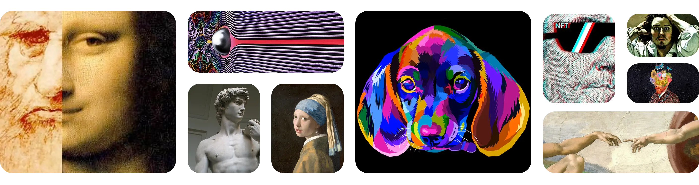

▶ O que é arte
"A arte étudo que dá brilho ao nosso mundo."

▶ O que é arte tradicional
Arte tradicional é a produção artística que preserva técnicas,
estilos e valores transmitidos ao longo do tempo, seja nos
grandes movimentos históricos ou em práticas culturais que
ainda hoje seguem essas heranças.
▶ O que é arte digital
Arte digital nasce da tecnologia: do traço em uma tela ao
universo em 3D. É rápida, acessível e feita para ser explorada
e compartilhada sem limites.
▶ Arte digital como extensão da arte tradicional
Não é ruptura, é evolução. O digital amplia a arte
tradicional, somando novas ferramentas sem apagar suas raízes.
▶ IA na arte◥
A inteligência artificial abre novas portas para a criação.
Com ela, um simples comando pode virar imagem, som ou vídeo em
segundos. É a tecnologia se tornando parceira da imaginação.
▶ Objetivo do site
Mostrar que criar arte nunca foi tão possível. Aqui, tradição e
inovação se encontram para inspirar quem quer transformar ideias
em expressão.